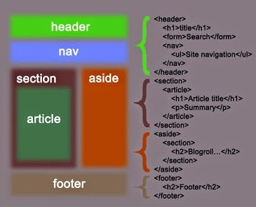

¿Qué es la historia HTML?
Antes de adentrarnos en la historia de HTML puntualicemos en el concepto. HTML en español se traduce como Lenguaje Marcado de Texto, es decir, un lenguaje con marcas que va a permitir estructurar y organizar el texto para que este sea legible. Además, permite, por medio de las etiquetas, establecer ciertas relaciones, hipervínculos y otras modificaciones.
¿Y por qué hipertexto? Porque no se trata solo de un texto secuencial, sino de todos los posibles enlaces que podemos integrar en él, desde otras páginas diseñadas hasta tablas complejas, videos o juegos, entre otros.

Hitoria de HTML
Hablar de la historia de HTML sin mencionar el nombre Tim Berners Lee es imposible. A principios de la década de los 90, el físico Tim Berners Lee, investigador de la Organización Europea para la Investigación Nuclear (CERN), realizó una publicación titulada «HTML Tags», conocida como el origen de HTML. Además, unos años después, fundó la W3C, que es uno de los principales agentes en la historia de HTML, como verás más adelante.
Esta publicación respondía a la necesidad de crear un sistema de hipertexto que les permitiera a los científicos e investigadores del CERN intercambiar información de forma rápida y fácil de referenciar. Ten presente que la investigación nuclear reúne a científicos de diversas disciplinas, por lo que optimizar el intercambio de información resultaba urgente. Es decir, HTML (HyperText Markup Language) surgió con el objetivo de agilizarles sustancialmente el trabajo y, por supuesto, lo logró.

Evolución de HTML
Si bien el origen de HTML se remonta a 1991, el año 1995 también tiene especial relevancia. Esto se debe a que en 1995 se publicó la segunda versión o HTML 2.0, que en realidad era una petición de estandarización. Es decir, HTML 2.0 fue la primera propuesta oficial de estandarización de HTML.
Dos años después, en 1997, se generaron dos nuevas versiones: a principios de año se publicó la versión HTML 3.2 y, a finales del mismo año, se publicó la actualización HTML 4.0. Como puedes ver, los cambios fueron a toda velocidad y los desarrolladores web de la época estuvieron algo ocupados adaptándose a cada modificación. Esto por no hablar de las pugnas entre los fabricantes de navegadores que realizaban actualizaciones muy personalizadas, hasta el punto de que una página web podía ser incompatible de un sitio a otro.
Posteriormente, a finales del año 1999, se publicó una nueva especificación oficial: la versión HTML 4.01, que marcó otro hito para la evolución de HTML.
Hasta 2008 no recibimos una nueva entrega, el borrador de la versión HTML 5 que es, en realidad, el sustento de todas la versiones actuales.
Desde el año 2014, HTML 5 es estándar y, aunque siguen surgiendo nuevas modificaciones y actualizaciones, los cambios son mínimos y fáciles de asimilar. Por ejemplo, una de las últimas recomendaciones es HTML 5.3, que salió a principios del 2021, pero no significó un cambio traumático.
¿Quiénes influyen en la historia de HTML?
Los desarrollos importantes en la humanidad se deben a los esfuerzos mancomunados de la comunidad científica, y en la historia de HTML no es diferente. Si bien existen otras contribuciones de vital importancia, resaltamos el aporte fundamental de dos organizaciones.
Por un lado, el físico británico Tim Berners Lee creó en 1994 el consorcio World Wide Web (W3C), que básicamente se encarga de emitir estándares y recomendaciones en pro del funcionamiento y crecimiento de la web. Por tanto, la historia de HTML y de otras herramientas y lenguajes de desarrollo web están estrechamente relacionadas con este consorcio.
Por otro lado, en el año 2004, se creó la Web Hypertext Application Technology Working Group (WHATWG). Esta asociación nació en oposición a las pugnas entre fabricantes de navegadores que realizaban actualizaciones demasiado personalizadas, como ya hemos mencionado anteriormente. Sumado a esta situación, la WHATWG también surgió como respuesta a una sustancial falta de interés de W3C en continuar las actualizaciones de HTML (recuerda que, desde 1999, pasan 9 años hasta que se emite una nueva actualización, la versión HTML 5 que ve la luz en el año 2008).
HTML en la actualidad
Actualmente, la historia de HTML ha llevado a este lenguaje a estar vinculado a JavaScript y CSS3, en lo que la W3C ha denominado Plataforma Web Abierta, que permite que estos lenguajes puedan usarse en el desarrollo de aplicaciones multiplataforma, es decir, tanto en iOS o Windows como Linux o Android.
En cuanto a la versión más reciente de HTML, no olvides que se trata de HTML 5.3, que se emitió en el año 2021, pero sin duda experimentaremos más y más actualizaciones a lo largo de los años. Sobre todo porque tanto la W3C como la WHATWG continúan realizando un arduo trabajo para establecer las recomendaciones y cambios pertinentes.

Algunos tipos más de etiquetas de HTML
- Etiqueta <address >
El elemento HTML <address> aporta información de contacto para su <article> más cercano o ancestro <body>; en el último caso lo aplica a todo el documento.
- Etiqueta <article >
El Elemento de HTML <article> representa una composición auto-contenida en un documento, una página, una aplicación o en un sitio, que se quiere que sea distribuíble y/o reutilizable de manera independiente, por ejemplo, en la redifusión. Algunos ejemplos podrían ser un mensaje en un foro, un artículo de una revista o un periódico, una entrada de blog, el comentario de un usuario, un widget o gadget interactivo, o cualquier otro elemento de contenido independiente.
- Etiqueta <aside >
El elemento HTML <aside> representa una sección de una página que consiste en contenido que está indirectamente relacionado con el contenido principal del documento. Estas secciones son a menudo representadas como barras laterales o como inserciones y contienen una explicación al margen como una definición de glosario, elementos relacionados indirectamente, como publicidad, la biografía del autor, o en aplicaciones web, la información de perfil o enlaces a blogs relacionados.
- Etiqueta <figcaption >
El elemento HTML <figcaption>representa un subtítulo o leyenda asociado al contenido del elemento padre <figure >, pudiendo ser colocado como primer o último hijo. Es importante destacar que el elemento <figcaption> es opcional.
- Etiqueta <pre >
El Elemento HTML <pre > (o Texto HTML Preformateado) representa texto preformateado. El texto en este elemento típicamente se muestra en una fuente fija, no proporcional, exactamente como es mostrado en el archivo. Los espacios dentro de este elemento también son mostrados como están escritos.
- Etiqueta <abbr >
El elemento HTML <abbr > (o Elemento de Abreviación HTML) representa una abreviación o acrónimo; el atributo opcional title puede ampliar o describir la abreviatura. Si está presente, el atributo title debe contener la descripción completa y nada más.